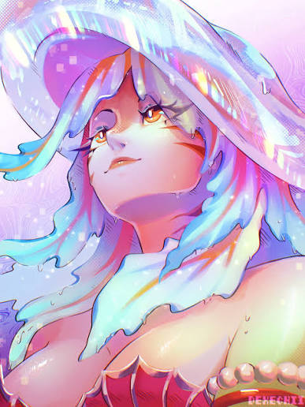
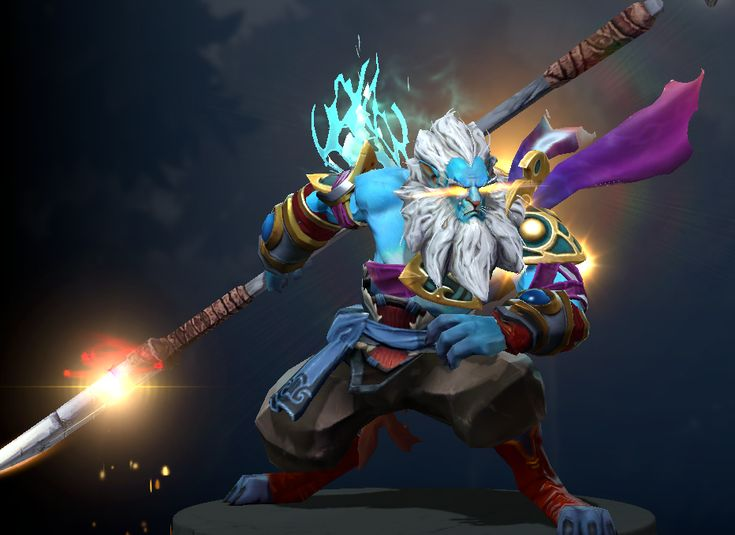

Авторские гайды на сигнатурных героев
Актуальные сборки предметов, раскачки способностей, матрицы талантов и макро-фишки от Романа.

Naga Siren Топ-1 Мира
Рекорд: 2207 GPM
Главный сигнатурный персонаж стримера. Полный разбор идеального контроля иллюзий, распределения пачек по всей карте и жесткого макро-доминирования.
Открыть гайдMeepo Микроконтроль
Винрейт: 59%
Параллельный фарм лесных лагерей, механика быстрого взрывного Poof-комбо и правильное распределение активных слотов и кулдаунов между клонами.
Открыть гайд
Phantom Lancer Иллюзионист
Винрейт: 58%
Реализация раннего тайминга Diffusal Blade, лавина бесконечных фантомов, выжигание маны саппортам и уклонение от летящих заклинаний через Doppelganger.
Открыть гайдTerrorblade Лейт-Лорд
Ср. GPM: 700+
Реализация мощной осадной демонической формы Metamorphosis, безопасный фарм опасных зон через Conjure Image и перевороты драк вовремя нажатым Sunder.
Открыть гайдViper Доминатор линии
Corrosive DPS: 100%
Метовое удушение мида, снижение магического сопротивления через Parasma, отключение пассивок за счет Nethertoxin и плотный билд через Aghanim.
Открыть гайд